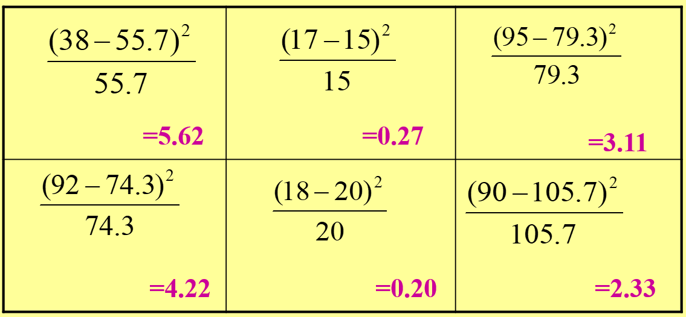

Test of Independence
Two variables are independent if, for all cases in the sample, the classification of a case into a particular category of one variable has no effect on the probability that the case will fall into any particular category of the second variable.
To conduct a chi square test, the variables must first be organized into a bivariate table
The idea of independence can be seen in bivariate tables
You need to compute a test statistic:
The Chi Square statistic is
the sum over all cells of
the squared difference between the obtained value and the expected value, which is then
divided by the expected frequency.
Formula 1 for Chi Square (obtained):
\[ \chi^{2} = \sum \frac{(O - E)^{2}}{E} \]
\[ E_{i,j} = \frac{(Row_{i}\ Total) * (Column_{j}\ Total)}{Grand\ Total} \]
The following are situations where we can use the Chi-Square test:
The Chi-Square tests the null hypothesis:
\(H_{0}\) : The two variables are independent (i.e. there is no association)
versus the alternative hypothesis:
\(H_{1}\) : The two variables are not independent (i.e. there is an association)
Therefore, when we reject the null hypothesis, we believe that the two variables affect each other, even though the test does not tell us how this association occurs between categories.
Suppose that the state legislature is considering a bill to lower the legal drinking age to 18. A political scientist is interested in whether there is a relationship between party affiliation and attitude toward the bill. A random sample of 150 registered republicans and 200 registered democrats are asked their opinion about the proposed bill.
Calculating the Expected Value for a Particular Cell
Ex: \(Cell_{11}\ =\ \frac{150 * 130}{350}\ =\ 55.7\)
Numbers in Black are obtained (\(f_{o}\))
Numbers in Purple are expected (\(f_{e}\))

The calculated value for the chi square statistic is compared to the critical value found in Table.
Note: The distribution of the Chi Square Statistic is not normal and the critical values are only on one side. If the obtained values are close to the expected value, then the chi square statistic will approach 0. As the obtained value is different from the expected, the value of chi square will increase. This is reflected in the values found in Table.
The Degrees of Freedom for the Chi Square Test of Independence is the product of the number of rows minus 1 times the number of columns minus 1.
\(\chi^{2}=5.62+0.27+3.11+4.22+0.20+2.33=15.75\)
In our study, we had two rows (Republicans and Democrats) and three columns (For, Undecided, Against). Therefore, the degrees of freedom for our study is (2-1)(3-1) = 1(2) = 2. Using an a of .05, the critical value from Table would be 5.991 Since our calculated chi square is 15.75, we conclude that there IS a relationship between political party and opinion on lowering the drinking age, thereby rejecting the Null Hypothesis
–> –> –> –> –>